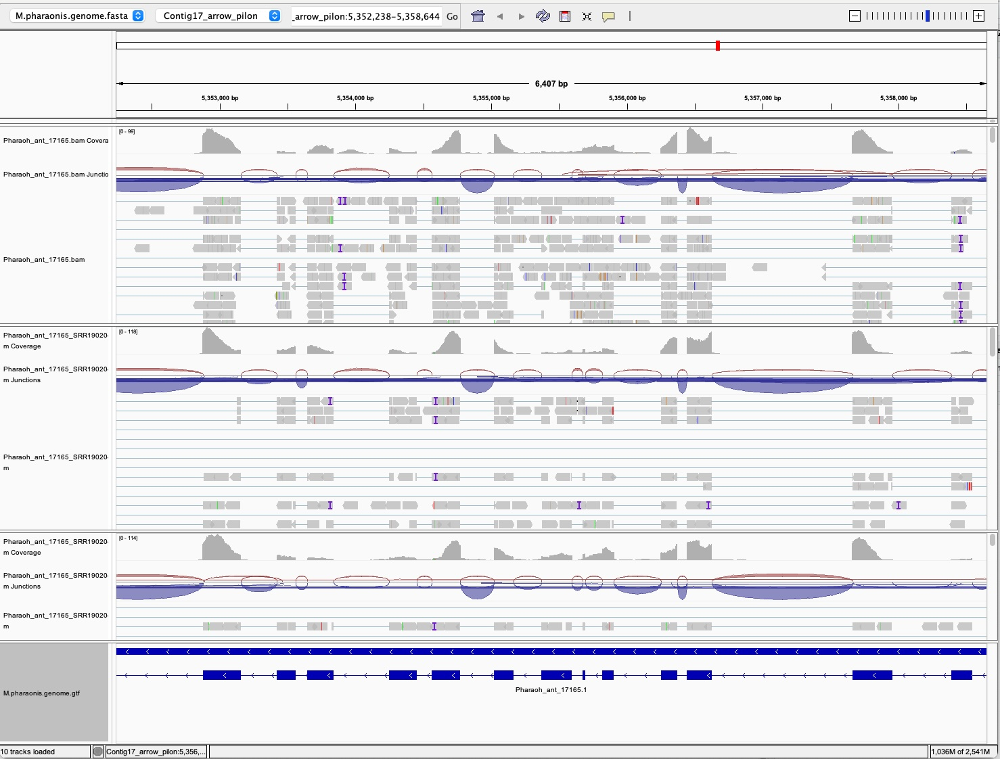

10 QC, mapping, and counting
10.1 Learning Objectives
| Learning Objectives: |
| Conduct quality control analysis of raw data specific to single-cell RNA-seq. |
| Generate a cell by gene count matrix |
In this module we’ll explore single-cell sequencing data. Single-cell sequencing aims to resolve molecular features or functions at the level of single cells. There are many assays currently available that leverage high throughput sequencing to understand gene expression, genotype, and epigenetics. There are even approaches that allow metabolomic and proteomic studies.
In this module we are specifically going to look at single-cell transcriptomics. We’re going to work with data from this paper:
Li, Q., Wang, M., Zhang, P. et al. A single-cell transcriptomic atlas tracking the neural basis of division of labour in an ant superorganism. Nat Ecol Evol 6, 1191–1204 (2022). https://doi.org/10.1038/s41559-022-01784-1
Single-cell transcriptomics data is comparable to bulk RNA-seq (which we covered last semester) in the sense that our goal for the initial part of the pipeline is to produce a count table giving the number of fragments of RNA attributable to each gene feature. The main difference, which is probably pretty obvious from the name, is that we want also to attribute each fragment to a particular cell! In ISG5302 you will learn some of the details of how this is accomplished. Here we are going to focus on the computational workflow.
10.2 Study question
Briefly, the authors were interested in understanding how caste specialization in ants is reflected in brain organization. Ants are social insects. For most species, all eggs in a given colony are laid by a single female, a queen. The queen is cared for by workers, which are females and non-reproductive. Queens can produce other queens, which typically disperse from the nest, mate, and found new colonies. Before these queens have mated they are called gynes. Queens can also produce males, which also disperse from the nest to find queens to mate with.
Each of these castes displays very specialized behavior which may be partly founded in differentiation of their brains. Queens are often large-bodied, not mobile and remain in the nest. Workers may cover large areas foraging, and spend lots of time maintaining the nest and the queen’s offspring. Gynes must disperse and found new colonies, and are often winged. Males, likewise are often winged and disperse in search of gynes.
The authors use single-nucleus sequencing data to characterize the cellular composition and expression state of ant brains from these four different castes in the species Monomorium pharaonis. They create 4-5 “replicates” of each caste, each consisting of 30-50 dissected out ant brains (presumably because ant brains are tiny). snRNAseq is a variant of single-cell RNA-seq, with the largest difference being that RNAs most abundant in the cytosol tend not to be well represented.
The authors aim to 1. Identify the cell types based on marker genes and by comparison with Drosophila cell types. 2. Compare the relative abundance of cell types across castes, and between M. pharaonis and Drosophila 3. Compare gene expression within cell types across castes.
Please give the paper a read before continuing on.
10.3 Sequencing data
Per the methods, nuclei were isolated for each replicate pool of brains and then prepared for sequencing using the DNBelab C Series Single-Cell Library Prep Set from MGI. The documentation for this kit lists it as a 3’ RNA sequencing kit. This means we would expect strong coverage bias toward the 3’ end of each transcript. 10x genomics has a nice figure. The reason for this is because the barcode/UMI technical read gets attached to the poly-A tail of the transcript during cDNA synthesis. When cDNA is then fragmented (fragments on the order of 300-400bp favored), the adapter used to sequence the biological read is attached to the other end of the fragment. So the fragment is always anchored on the trancript’s poly-A tail and the biological read is just upstream, leading to a 3’ coverage bias. See this figure, panel A.
This is an emulsion-based sequencing kit. Much of the processing of RNA happens inside droplets containing a single nucleus. The droplets are supposed to contain a single nucleus and single bead with barcoded adapters attached. All the adapters on each bead have the same barcode. In later stages of library preparation, the emulsion is broken, and fragments from all nuclei are sequenced together. The barcodes allow the sequence reads to be assigned to cells during processing.
This is paired-end sequencing data, but read 1 is a technical read (30bp containing the barcode) and read 2 is a biological read (100bp, containing transcript sequence). In the methods, the technical read is described as having two barcodes (bases 1-10 and bases 11-20) and a unique molecular identifier (UMI, bases 21-30). So read 1 contains the information we need to attribute a fragment to a particular cell, and read 2 is what gets mapped back to the reference.
10.3.1 Unique molecular identifiers
UMIs are random oligonucleotides included as part of an adapter sequence. They allow the identification of sequence reads that come from the same original biological molecule. As we talked about in the variant calling chapter, the primary source of these duplicate molecules is polymerase chain reaction (PCR) steps during library preparation. They are essentially pseudo-replicates, and introduce noise (and possibly some bias) to quantification of gene expression. The more duplicates you sequence and include in your analysis, the bigger the risk to the downstream application. In this case, the 10 base UMI has 4^10^ = 1048576 possible sequences, so any identical biological reads that share a UMI are almost certainly derived from the same molecule and duplicates can be safely removed (or simply counted once).
UMIs are particularly important in applications where:
- The amount of starting material is small. When the amount of starting material is small, even low depth sequencing can “saturate” the library (meaning most unique fragments have been sequenced and further sequencing is more and more likely to be of fragments).
- Library complexity is low. Low library complexity means the diversity of fragments is low. With 3’ RNA sequencing, the same part of each transcript is targeted with less diversity than if the whole transcript was randomly sequenced. In high diversity libraries, observing duplicate fragments can be taken as evidence of PCR duplication and those fragments can be removed safely (as in variant calling with WGS sequence). In low complexity applications this is not a safe assumption, and without UMIs it becomes very difficult to even assess the scale of the problem.
- Very rare events are the focus of investigation. When rare events are of interest, it becomes much harder to distinguish error from true signals. Consider looking for a low-frequency somatic mutation. Duplicate molecules containing mis-incorporated bases treated as independent observations will be taken as better evidence for a true variant than they should be.
A 3’ sequencing approach to single-cell data fits the first two cases very well. The starting material is a single cell’s worth of genetic material, and 3’ sequencing targets a subset of that material. Because of this, UMI’s are a very common (if not universal) feature of single-cell library preparation.
10.4 Digging into the data
We’ll be following along with code in this git repository. So go ahead and clone it to get started (or fork your own version and clone that if you prefer).
/scratch
At this point in the semester you may be running low on space in your home directory. You may want to clean up old assignments (if you’re writing clean code, you can always re-run it!), alternatively, consider using /scratch, a large shared temporary storage space available to all users on Xanadu. Create a directory for yourself to work in, e.g. /scratch/username, and set the permissions so you’re the only one with access. Files in /scratch are subject to deletion without notice if they are unused for 90 days, so if you’re writing code there, regular pushes to a remote git repository are recommended!
There are two sources of data for this study: the authors deposited files on FigShare, and raw sequence data in NCBI’s SRA (and the Chinese National GeneBank Archive; CNGB), under BioProject accession PRJNA833256.
10.4.2 SRA data
If we visit the bioproject accession page and click through the SRA Run Selector, we’ll also see that They appear to have been sequenced on two different instruments. So it’s not clear exactly what’s going on here. These details don’t appear in the paper or the supplemental material.
According to the Run Selector page, we’re looking at about 4.2TB of data. That’s a lot! The authors have provided the count table, so we’ll go through the process of counting for just a couple libraries to get an understanding of the data and use the provided count table in the next chapter.
Let’s download those now. There is a script, scripts/01_getData/02_sra.sh
We should be pretty familiar with this by now:
OUTDIR=../../data/fastq
mkdir -p ${OUTDIR}
ACCLIST=../../metadata/subset.txt
# use parallel to download 2 accessions at a time.
cat $ACCLIST | head -n 3 | parallel -j 3 "fasterq-dump -O ${OUTDIR} {}"
# compress the files
ls ${OUTDIR}/*fastq | parallel -j 6 gzipThe subset.txt file just contains 3 accessions. One with the 41bp technical read and two with the 30bp read expected from the manuscript.
When it’s finished we can see we’ve got 6 fastq files:
ls -lh data/fastq/total 144G
-rw-r--r-- 1 nreid cbc 20G Mar 10 20:08 SRR19020406_1.fastq.gz
-rw-r--r-- 1 nreid cbc 40G Mar 10 20:11 SRR19020406_2.fastq.gz
-rw-r--r-- 1 nreid cbc 13G Mar 10 21:11 SRR19020416_1.fastq.gz
-rw-r--r-- 1 nreid cbc 30G Mar 10 21:15 SRR19020416_2.fastq.gz
-rw-r--r-- 1 nreid cbc 13G Mar 10 21:15 SRR19020423_1.fastq.gz
-rw-r--r-- 1 nreid cbc 30G Mar 10 21:18 SRR19020423_2.fastq.gzI like to check in on barcode/UMI data to validate that it is what I expect. Let’s look at the 41bp technical read first.
bioawk -c fastx '{print $seq}' data/fastq/SRR19020406_1.fastq.gz | headTCGACGTCAGCCTTGCGGAACGTGCCCGGCCACCTTCGAGT
TGCGAGCTCTGCCTGTCCTGCTTAGTCCTTCTGGTTAGGCT
TAGTCTACACTCTTNAAACGAGTATTCCTTCATTGGCACAC
TTATTGCGATCCTTCCCAGTCCAGGAGATGAATCGTAGTTT
GGAGCGACGACGTTGCCTCAAGTCGCCGATGTGCCGAATTA
GCAACCGACACCTTCCTGCAAGATACCGATGGTAAACGGAG
TGACGACCAACGTTCCCGCCTGGAGACCATGCCAGAGATCC
TTGACTCGGCCCTTCCTTGTGGCATCCGATGAGTTTAGCAT
GTCGCCTCTTCCTTCCCCACTGGATTCGATGATGTCTTATT
CTTCATTATACCTTCCTGTGTAGCCGCGATGGATAAACTTTJust eyeballing it, we can see it looks pretty messy. You might expect that the spaces in between barcodes would be consistent sequences, but this doesn’t appear to be entirely true at first glance. Let’s count up how many unique barcode 1 and 2 sequences we have in the first 100k reads:
For barcode 1:
bioawk -c fastx '{print $seq}' data/fastq/SRR19020406_1.fastq.gz | head -n 100000 | cut -c 1-10 | sort | uniq | wc -l9524For barcode 2:
bioawk -c fastx '{print $seq}' data/fastq/SRR19020406_1.fastq.gz | head -n 100000 | cut -c 17-26 | sort | uniq | wc -l14323And combined…
bioawk -c fastx '{print $seq}' data/fastq/SRR19020406_1.fastq.gz | head -n 100000 | cut -c 1-10,17-26 | sort | uniq | wc -l41364And what about for the UMI?
bioawk -c fastx '{print $seq}' data/fastq/SRR19020406_1.fastq.gz | head -n 100000 | cut -c 32-40 | sort | uniq | wc -l75933And all together:
bioawk -c fastx '{print $seq}' data/fastq/SRR19020406_1.fastq.gz | head -n 100000 | cut -c 1-10,17-26,32-40 | sort | uniq | wc -l97895So obviously this is a bit of a rough way of looking at this, but we seem to see something like what we expect. A reasonable diversity of barcode sequences, lots of unique UMIs, and when we combine them altogether, we see that most of the sequences are unique.
When this data is actually processed, it will be considerably more complex. Ideally we would have a barcode “whitelist” for both barcodes, giving the barcodes that may actually appear in the library. This would allow the read counter to rescue many reads with errors in the barcode. Once reads were assigned to cells, the UMI counting could also account for errors in assessing unique reads.
10.5 FastQC
We’re going to run FastQC on these data, as we almost always do with short read data, though we should expect it to flag some things as problematic that are probably fine.
INDIR=../../data/fastq/
OUTDIR=../../results/02_qc/fastqc
mkdir -p ${OUTDIR}
find ${INDIR} -name "SRR*fastq.gz" | parallel -j 6 \
fastqc -t 2 -o ${OUTDIR} ${INDIR}/{}Then we’ll run MultiQC:
INDIR=../../results/02_qc/fastqc
OUTDIR=../../results/02_qc/multiqc
mkdir -p ${OUTDIR}
# run on fastp output
multiqc -f -o ${OUTDIR} ${INDIR}If you go and grab the multiqc HTML file from Xanadu and load it up in a web browser, you’ll see that the sequence qualities look good. We have between 341 and 473 million read pairs. Quite a lot.
You’ll also see a very high “duplication” rate of around 69-77% for the biological reads and 44-76% for th technical reads. This is ok. For 3’ RNAseq we expect a higher rate of identical sequences, even if they aren’t PCR duplicates, and for single-cell sequencing we will also expect a bunch of PCR duplicates. We have UMIs to sort this out.
The paper says they finally included around 206,000 cells in their analysis. There are 17 samples. So depending on how many of these libraries were actually included in the analysis, we might expect between 1000 and 10000 cells in each library (it’s not clear from the methods). So that would suggest we have in the neighborhood of 34,000 and 473,000 raw reads per cell. Continuing with this very rough back-of-the napkin calculation, we might expect 10,000-140,000 unique counts (not accounting for mapping yet).
Take a look at the “per base sequence content” panel. You’ll see that indeed, sample SRR19020406 has spacers between the barcodes and UMI. They are not perfectly consistent, but most bases follow a pattern. We’d have to do a little more research into the adapter design to understand why that is.
We don’t see major problems with anything here, so we can move on to the mapping and counting step.
10.6 Reference mapping and counting fragments per cell
Now we are ready to do the mapping and counting. There are lots of tools for doing this. Folks with data from 10X Genomics often use their software Cell Ranger. In this module we’re going to use a flexible program capable of handling a wide array of data types STARsolo, a part of the STAR aligner package. There is a PDF manual on the git page.
STARsolo is going to simultaneously align reads, assign them to cells and to genes, and count up the unique fragments accounting for the UMIs. It will do it quickly as well!
10.6.1 Indexing the genome
As with most aligners, we first need to index the genome. Our genome is pretty small, only 325mb, so this should not require much in the way of resources.
bioawk -c fastx '{n+=length($seq)}END{print n}' data/Li_etal_2022/M.pharaonis.genome.fasta 325372717Let’s have a look at script scripts/03_counts/01_indexSTAR.sh.
We request 16 cpus and 25G of memory:
#SBATCH -c 16
#SBATCH --mem=25Gand run it like this:
module load STAR/2.7.11b
INDIR=../../data/Li_etal_2022/
OUTDIR=../../data/Li_etal_2022/genomeIndex
mkdir -p ${OUTDIR}
GENOME=../../data/Li_etal_2022/M.pharaonis.genome.fasta
GTF=../../data/Li_etal_2022/M.pharaonis.genome.gtf
STAR --runThreadN 16 \
--runMode genomeGenerate \
--genomeDir ${OUTDIR} \
--genomeFastaFiles ${GENOME} \
--sjdbGTFfile ${GTF} \
--sjdbOverhang 99That last option, per the manual, should be set to the read length minus 1. Our genome index files are dropped in a subdirectory with the data we downloaded.
When we run seff:
Job ID: 8957566
Cluster: xanadu
User/Group: nreid/cbc
State: COMPLETED (exit code 0)
Nodes: 1
Cores per node: 16
CPU Utilized: 00:12:42
CPU Efficiency: 26.91% of 00:47:12 core-walltime
Job Wall-clock time: 00:02:57
Memory Utilized: 7.86 GB
Memory Efficiency: 31.43% of 25.00 GBWe see it went shockingly fast. 3 minutes of wall time and 31% of the memory we asked for.
10.6.2 Mapping and counting
With our genome index in hand, we can map and count. Because we have two different library types and only three samples, there are three separate scripts here, one for each sample. At this point in the program, it should be clear that if we were going to try to analyze all 168 accessioned libraries, we would want to set up something like an array job to handle this.
We have three scripts:
scripts/03_counts/02_starSOLO_SRR19020406.sh
scripts/03_counts/03_starSOLO_SRR19020416.sh
scripts/03_counts/04_starSOLO_SRR19020423.shLet’s have a look at one. We requested the same resources:
#SBATCH -c 16
#SBATCH --mem=25GThe analysis code looks like this:
module load STAR/2.7.11b
module load bioawk
INDIR=../../data/fastq
OUTDIR=../../results/02_counts
mkdir -p ${OUTDIR}
GENOME=../../data/Li_etal_2022/genomeIndex
FQREAD=${INDIR}/SRR19020406_2.fastq.gz
FQBARCODE=${INDIR}/SRR19020406_1.fastq.gz
# read file needs to be first, barcode file second (reverse from our data)
# usually you want a barcode whitelist, but we don't have one.
# --soloCBmatchWLtype 0 means treat every barcode sequence as unique. Will have to obvious failures later.
STAR --runThreadN 16 \
--genomeDir ${GENOME} \
--readFilesIn <(zcat ${FQREAD}) <(bioawk -c fastx '{S = substr($seq,1,10) substr($seq,17,10) substr($seq,32,10); Q = substr($qual,1,10) substr($qual,17,10) substr($qual,32,10); print "@"$name"\n"S"\n+\n"Q}' ${FQBARCODE}) \
--soloType CB_UMI_Simple \
--soloBarcodeReadLength 30 \
--soloCBstart 1 \
--soloCBlen 20 \
--soloUMIstart 21 \
--soloUMIlen 10 \
--soloCBwhitelist None \
--soloCBmatchWLtype ExactThis is a bit wacky. First let’s tackle the worst part, the --readFilesIn flag.
In this case we want to provide --readFilesIn <biological read file> <technical read file>. We could provide these as gzipped files, but we would need to supply another option. So what are we doing here?
We’re using process substitutions because of a slight issue with STARsolo. The issue is that we have a complex barcode. We actually have TWO barcodes separated by a spacer. For that case, there is an option to specify their locations, but when you do that, STARsolo wants barcode whitelists for each barcode. We don’t have those (they are not linked to from the library prep product webpage for some reason). So instead, we’re going to pre-process our technical read so that we can just treat our two 10bp barcodes as a single 20bp barcode. With the simple barcode option STARsolo will not require a whitelist, and will just treat every unique barcode sequence as a true barcode (requiring us to do more filtering downstream).
So how do we do that? With bioawk
bioawk -c fastx '{S = substr($seq,1,10) substr($seq,17,10) substr($seq,32,10); Q = substr($qual,1,10) substr($qual,17,10) substr($qual,32,10); print "@"$name"\n"S"\n+\n"Q}' ${FQBARCODE}In this command, we take the sequence and the base qualities and we simply cut out the sections we want and concatenate them back together and write out the read. Instead of making a whole new file, we use a process substitution, We wrap our command in <() and put that on the command line. It’s essentially a pipe, but we’re using it as an argument. Because we’re piping the results in plain text, we also unzip and pipe in the biological read like this <(zcat ${FQREAD}). We could use named pipes as well.
There may be a better way to handle this, but we’re going to run with this for now because it works.
In the next few arguments we specify the starting position and length of the “barcode” and UMI. In the final two arguments we say we don’t have a whitelist and to treat every observed barcode sequence as true. The other two scripts are almost identical. The difference is that both barcodes are contiguous already, so we don’t need to do any preprocessing:
--readFilesIn ${FQREAD} ${FQBARCODE} \
--readFilesCommand zcat \We can just provide the files and tell STARsolo they need to be unzipped to read them.
If we look at seff output for one of the jobs:
Job ID: 8960211
Cluster: xanadu
User/Group: nreid/cbc
State: COMPLETED (exit code 0)
Nodes: 1
Cores per node: 16
CPU Utilized: 08:55:48
CPU Efficiency: 84.49% of 10:34:08 core-walltime
Job Wall-clock time: 00:39:38
Memory Utilized: 7.74 GB
Memory Efficiency: 30.94% of 25.00 GBWe see it took about 40 minutes to process one of the files (the largest one). CPU efficiency was pretty good, at 84%.
So what does the output look like?
ls -lh results/03_countstotal 316G
-rw-r--r-- 1 nreid cbc 138G Mar 10 02:22 SRR19020406Aligned.out.sam
-rw-r--r-- 1 nreid cbc 2.0K Mar 10 02:24 SRR19020406Log.final.out
-rw-r--r-- 1 nreid cbc 30K Mar 10 02:24 SRR19020406Log.out
-rw-r--r-- 1 nreid cbc 4.3K Mar 10 02:24 SRR19020406Log.progress.out
-rw-r--r-- 1 nreid cbc 9.6M Mar 10 02:22 SRR19020406SJ.out.tab
drwx------ 3 nreid cbc 1.0K Mar 09 11:21 SRR19020406Solo.out
drwx------ 2 nreid cbc 0 Mar 10 02:24 SRR19020406_STARtmp
-rw-r--r-- 1 nreid cbc 89G Mar 10 02:28 SRR19020416Aligned.out.sam
-rw-r--r-- 1 nreid cbc 2.0K Mar 10 02:30 SRR19020416Log.final.out
-rw-r--r-- 1 nreid cbc 31K Mar 10 02:30 SRR19020416Log.out
-rw-r--r-- 1 nreid cbc 5.0K Mar 10 02:30 SRR19020416Log.progress.out
-rw-r--r-- 1 nreid cbc 12M Mar 10 02:28 SRR19020416SJ.out.tab
drwx------ 3 nreid cbc 1.0K Mar 10 02:28 SRR19020416Solo.out
drwx------ 2 nreid cbc 0 Mar 10 02:30 SRR19020416_STARtmp
-rw-r--r-- 1 nreid cbc 90G Mar 10 02:25 SRR19020423Aligned.out.sam
-rw-r--r-- 1 nreid cbc 2.0K Mar 10 02:26 SRR19020423Log.final.out
-rw-r--r-- 1 nreid cbc 31K Mar 10 02:26 SRR19020423Log.out
-rw-r--r-- 1 nreid cbc 4.7K Mar 10 02:26 SRR19020423Log.progress.out
-rw-r--r-- 1 nreid cbc 11M Mar 10 02:24 SRR19020423SJ.out.tab
drwx------ 3 nreid cbc 1.0K Mar 10 02:24 SRR19020423Solo.out
drwx------ 2 nreid cbc 0 Mar 10 02:26 SRR19020423_STARtmpFor each sample we have several files and directories.
*Aligned.out.sam: An uncompressed, unsorted alignment of all the biological reads. Takes up a lot of space! Good to get rid of this as soon as you’re done with it.- Log files:
Log.outmentions the filtering thresholds for UMI counts included in the filtered output.Log.final.outgives the mapping rate statistics. Similar to samtools stats, but in a much harder to parse format. SJ.out.tabis a table of splice junctions.Solo.outis a directory containing more results!
ls -lh results/03_counts/SRR19020406Solo.out/-rw-r--r-- 1 nreid cbc 792 Mar 10 02:22 Barcodes.stats
drwx------ 4 nreid cbc 2.5K Mar 09 11:23 GeneBarcodes.stats contains nothing in our case because it needs a whitelist. Gene is yet another directory…
-rw-r--r-- 1 nreid cbc 726 Mar 10 02:24 Features.stats
drwx------ 2 nreid cbc 1.5K Mar 09 11:23 filtered
drwx------ 2 nreid cbc 1.5K Mar 09 11:23 raw
-rw-r--r-- 1 nreid cbc 644 Mar 10 02:24 Summary.csv
-rw-r--r-- 1 nreid cbc 5.4M Mar 10 02:24 UMIperCellSorted.txtFeatures.stats summarizes some information about the counting.
noUnmapped 40192090
noNoFeature 246794638
MultiFeature 3500527
subMultiFeatureMultiGenomic 3500527
noTooManyWLmatches 0
noMMtoWLwithoutExact 0
yesWLmatch 168522296
yessubWLmatchExact 168522296
yessubWLmatch_UniqueFeature 168522296
yesCellBarcodes 2748160
yesUMIs 13202218noUnmapped is the number of unmapped reads. noNoFeature is the number that did not map to an annotated feature. This is over 50% of our reads for SRR19020406. This seems problematic. In bulk RNA-seq we would be concerned about this. It could be that this non-model organism has a badly annotated genome. It may be missing genes, or the gene annotations may exclude 3’ and 5’ UTRs that are a large proportion of the expressed sequence (again, see this figure, panel B for a test dataset showing a large fraction of data in 3’ UTR in a human test dataset). It’s possible there is genomic DNA contamination so that lots of reads are not actually derived from RNA. It would take a bit of digging to sort this out. The other libraries have similarly high numbers. We left the --soloFeatures option on the default Gene, which does not count intronic sequence. For shotgun mRNA sequencing, if a large proportion of snRNA-seq data is unspliced immature mRNA much of that would be excluded here.
Since we have no whitelist, the WL categories are just referring to reads mapped to features. CellBarcodes is the number of unique cell barcodes. It’s 2.7 million. This is because there are lots of barcode errors that get counted as real barcodes because we didn’t supply a whitelist. UMIs is the number of unique UMIs.
Summary.csv similarly gives us summary stats:
Number of Reads,472993453
Reads With Valid Barcodes,1
Sequencing Saturation,0.921659
Q30 Bases in CB+UMI,-nan
Q30 Bases in RNA read,0.923329
Reads Mapped to Genome: Unique+Multiple,0.911822
Reads Mapped to Genome: Unique,0.848008
Reads Mapped to Gene: Unique+Multiple Gene,NoMulti
Reads Mapped to Gene: Unique Gene,0.356289
Estimated Number of Cells,1315
Unique Reads in Cells Mapped to Gene,76495313
Fraction of Unique Reads in Cells,0.453918
Mean Reads per Cell,58171
Median Reads per Cell,38700
UMIs in Cells,3316322
Mean UMI per Cell,2521
Median UMI per Cell,1647
Mean Gene per Cell,1219
Median Gene per Cell,1004
Total Gene Detected,11423So in the end, we crunch 473 million reads down to 76 million reads mapped to genes in 1,315 cells. The median reads per cell is 38,700, but the median UMIs per cell 1647, and those are distributed across a median number of genes detected per cell of 1,219! This is a far cry from the 10s of millions of reads and ~20k genes we expect for a typical bulk RNA-seq analysis. But on the other hand, this library has produced 1315 cells! We are leaving the default cell filtering on right now, but there are parameters we could play with.
UMIperCellSorted.txt contains the number of UMIs per cell for all possible cells (for sample SRR19020406 this will have >2m lines).
Finally we have the raw and filtered directories. These contain the information you need downstream. raw contains ALL possible cells (you probably don’t want this one) and filtered contains the filtered cells.
-rw-r--r-- 1 nreid cbc 27K Mar 10 02:24 barcodes.tsv
-rw-r--r-- 1 nreid cbc 816K Mar 10 02:24 features.tsv
-rw-r--r-- 1 nreid cbc 18M Mar 10 02:24 matrix.mtxbarcodes.tsv lists all the barcodes. features.tsv is a table of gene features. Unfortunately it appears that STARsolo did not extract the gene symbols, so we’d have to do a little data manipulation to pull that information into R ourselves later. matrix.mtx is the matrix of counts. It’s in a sparse matrix format so that the huge numbers of zeroes in the matrix do not need to be stored. The format is:
%%MatrixMarket matrix coordinate integer general
<num_genes> <num_cells> <num_nonzero_entries>
gene_index cell_index count
...So the first few lines look like this:
%%MatrixMarket matrix coordinate integer general
%
16091 1315 1603913
21 1 2
27 1 4
52 1 1
81 1 1
90 1 1
93 1 1
102 1 1
125 1 3
133 1 2And the gene and cell indexes refer back to the barcodes and features .tsv files.
11 Checking out the sam files
As one last data check before we move on, let’s have a quick look at the SAM files. The most obvious thing we could look for is whether reads pile up at the 3’ end of gene models. As we mentioned, they are not not sorted and compressed, so we can’t easily just get a set of reads from a single location. We could use the .mtx file to pull out a bunch of genes that have decently high counts. That way we can just troll through part of the unsorted SAM file and still have a good shot at pulling out a decent number of reads.
If we do
tail -n +4 matrix.mtx | awk '{IFS=" "} $3 > 50' | cut -f 1 -d " " | sort | uniq -c | sort -rg | headThat will give us a list of genes numbers. We can pull IDs from features.tsv and then get the coordinates from the gtf file.
With those coordinates we can filter the first few million entries in the SAM file.
Here we’ll check the gene Pharaoh_ant_17165 which has boundaries Contig17_arrow_pilon:5340830-5371146 and is on the reverse strand.
From the directory results/03_counts:
# grab the header
samtools view -H SRR19020406Aligned.out.sam >samheader.txt
FILES=(SRR19020406 SRR19020416 SRR19020423)
for SRR in ${FILES[@]}
do
( cat samheader.txt
grep "Contig17_arrow_pilon" ${SRR}Aligned.out.sam | awk '$4 >= 5340830 && $4 <= 5371146' | head -n 5000
) | samtools sort -O BAM >Pharaoh_ant_17165_${SRR}.bam
samtools index Pharaoh_ant_17165_${SRR}.bam
doneAnd while we’re at it, let’s sort, compress and index:
( cat samheader.txt
cat Pharaoh_ant_17165.sam
) | samtools sort -O BAM >Pharaoh_ant_17165.bam
samtools index Pharaoh_ant_17165.bam
( cat samheader.txt
cat Pharaoh_ant_17165.sam
) | samtools sort -O BAM >Pharaoh_ant_17165.bam
samtools index Pharaoh_ant_17165.bam
( cat samheader.txt
cat Pharaoh_ant_17165.sam
) | samtools sort -O BAM >Pharaoh_ant_17165.bam
samtools index Pharaoh_ant_17165.bamOk, so now we’ve got 5,000 reads from each of our SRA accessions from within this gene. We should see them concentrated at the left end of the gene interval because the gene is on the reverse strand. Let’s roughly tally them up by position:
samtools view Pharaoh_ant_17165_SRR19020423.bam | cut -f 4 | awk '{n=int($1/500)*500}{print n}' | uniq -c 43 5340500
217 5341000
118 5341500
68 5342000
282 5342500
56 5343000
315 5343500
382 5344000
101 5344500
43 5345000
222 5345500
287 5346000
363 5346500
772 5347000
124 5347500
22 5348000
12 5348500
48 5349000
13 5349500
6 5350000
10 5350500
4 5351000
91 5351500
3 5352000
134 5352500
68 5353000
23 5353500
39 5354000
128 5354500
74 5355000
105 5355500
128 5356000
95 5356500
3 5357000
102 5357500
8 5358000
19 5358500
93 5359000
22 5359500
31 5360000
21 5360500
65 5361000
23 5361500
21 5362000
10 5362500
13 5363000
44 5363500
25 5364000
24 5364500
10 5365000
7 5365500
5 5366000
19 5366500
4 5367000
7 5367500
14 5368000
2 5368500
2 5369000
6 5369500
4 5370500We do seem to see that. But this is also a good use case for IGV. Let’s download the bam/bai files we just created (they’re very small because we just extracted 5000 reads for three samples), the genome, and the GTF file and load them up.
Here’s a screenshot:

Well, it sure looks like we have pileups on all the exons, and lots of reads spliced across exons as well. And if we scroll to the left end of the interval (3’ end of the gene), we see generally much higher coverage on those exons than on the right end (5’ end of the gene). Another thing we can check is the orientation of the reads. In 3’ sequencing, the reads should all be on the coding strand, which for this gene model is the reverse strand. If we right-click and color alignments by strand, we’ll see the vast majority are indeed mapped to the reverse strand.
11.1 Conclusion
We’ve done a bit of poking around and found some lack of detail in the methods, and some discordance with what was reported in the manuscript. One last concern that’s worth raising here is that it’s unclear how the many libraries corresponding to each sample were prepared. With a lab work study design like this, you would ideally batch the libraries to avoid confounding study variables (phenotype, replicate) with batches. To make the numbers even, if you had 10 libraries for each of 17 samples, you might process the libraries in 10 batches of 17, one from each sample, rather than 17 batches of 10 with all libraries of each type processed together. This would help avoid mistaking technical artifacts corresponding to batch for biological signals.
In this chapter we explored only a few samples. In the next chapter we’ll start with the count data deposited in FigShare by the authors of the original paper.